Reverse Engineering an ASIC
Table of Contents
Solution
The following sequence will drive the success pin high.
- Drive
rst_nhigh. - Drive
enablehigh. - Each clock cycle, drive
Ihigh/low according to the sequence below.
When enable goes low, the output pin success will be driven high, and the
output vector O[7:0] will output (* TWO STARS *) in ASCII form.
Input Sequence:
0 0 0 0 0 0 0 1 0 1 0 1 0 0 0 0 1 0 0 0 0 0 0 0 0 0 0 0 0 1 0 1 0 1 0 1 0 0 0 0 0 0 0 0 0 0 0 0 1 0 1 0 0 0 0 0 0 1 0 0 0 0 0 1 0 0 0 0 0 0 1 0 0 0 0 0 1 0 1 0 0 0 0 1 0 0 0 0 0 0 0 1 0 0 0 0 0 0 1 0 0 0 0 0 1 0 0 1 0 0 0 1 0 1 0 0 0 0 0 0 0
Waveform Proof
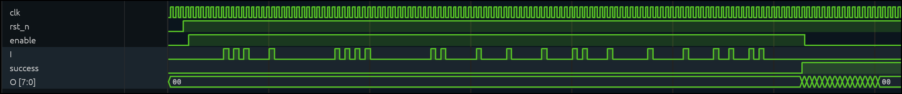
Figure 1: Waveform capture (from Surfer) showing the full input sequence that makes the "success" pin go high.
Process
Section I only shows what sequence solves the puzzle. This section highlights how I found the solution. I tried many other things that took me down some rabbit holes. If I tried to include them all here, the document would be… way too long.
Initial Investigation
I started by loading the gds file into both Tiny Tapeout and KLayout, as recommended in the README.

Figure 2: Screenshot from Tiny Tapeout's GDS viewer, showing the 3D structure of the puzzle ASIC.
While exploring the GDS viewer, I noticed the "cells/instances" sidebar on the right side. Knowing that ASICs tend to be made up of well-defined standard cells, I realized that the GDS file included more information than just the physical layer geometry.
Finding: The puzzle uses the sky130 standard cell library!
Then, I found an open-source Python package called GDSAST which (as you might expect) turns a GDS file into an abstract syntax tree (AST). I exported this tree as a JSON, which has the following structure.
The most important thing to notice is that there is a list of structures that define each sky130 standard cell and its physical layout. The physical layout consists of polygons and paths, each existing on their respective layers. The second thing to note is that the final item in the "structures" array is simply called "puzzle". This structure is not like any of the others. Instead of containing only the geometry of polygons, this also contains many "sref" items, which are an instance of a previously-defined standard cell. In essence, most structures in the list are only defining standard cells, which are subsequently placed (and rotated/reflected) in the puzzle.
Simplified AST from puzzle.gds
root
- structures
- and2 standard cell
- polygon (layer, datatype, x, y, width, height)
- path (all x-y coordinates this path touches)
- polygon (layer, datatype, x, y, width, height)
- <more polygons/paths>
- xor2 standard cell
- polygon (layer, datatype, x, y, width, height)
- path (all x-y coordinates this path touches)
- <more polygons/paths>
- <more standard cells>
- puzzle
- sref
- standard cell type (e.g. and2)
- x, y, rotation, reflection
- sref
- standard cell type (e.g. or3)
- x, y, rotation, reflection
- polygon (layer, datatype, x, y, width, height)
- ...
(NOTE: This is SIMPLIFIED for clarity. I recommend parsing puzzle.gds
yourself to see the structure of the GDS file!)
Finding: The GDS file defines the geometry of all the standard cells, then places many instances of them to create the overall puzzle.
Since the standard cells are (of course) standardized, I looked up the GDS layers of the sky130 library online and pulled out the layers I saw in the JSON file.
| Layer Number | Datatype | Name | Meaning |
|---|---|---|---|
| 67 | 20 | licon | Local Interconnect (yellow on GDS file) |
| 67 | 44 | mcon | Connection from licon to metal1 |
| 68 | 20 | metal 1 | First layer of metal (blue on GDS file) |
| 68 | 44 | via | Connection from metal 1 to metal 2 |
| 69 | 20 | metal 2 | Second layer of metal (lightest blue on GDS file) |
| … | … | … | … |
Summary: So, just to summarize what I learned so far:
- The GDS file can be parsed into a list of standard cells with known logical functions.
- All logical cells are from the sky130 library (specifically, the foundry-supplied high-density variant).
- The puzzle places many instances of these standard cells and connects them together to form the ASIC.
Creating Netlist
The next challenge was turning these geometries into a simulatable netlist. I started by writing a Python script that would iterate through each standard cell in the structures list and render its geometry using matplotlib. Each layer was designated a respective color.
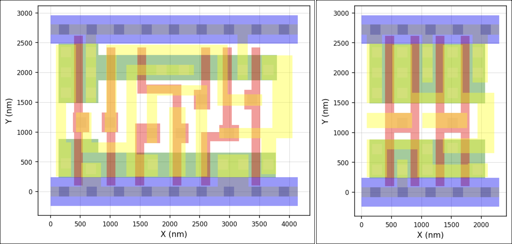
Figure 3: Matplotlib renders of a 2x1 MUX (left) and a NAND2 gate (right).
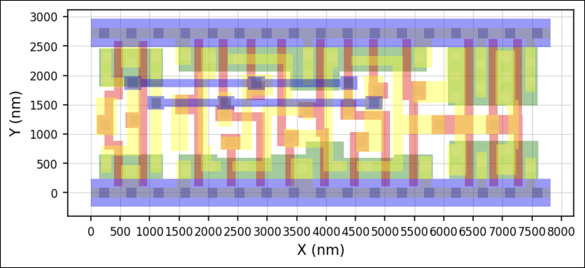
Figure 4: D-FlipFlop standard cell render, which goes up to the Metal 1 layer.
From these renders (and from finding several placements in Tiny Tapeout), I realized that although the logic was well-defined, the specific point of connection to a higher layer was not consistent from one cell to the next. For instance, one instance of a NAND2 cell might have a via connecting to the top of the leftmost licon polygon (yellow), while another instance might be connected near the bottom. Therefore, although I knew that the instance was supposed to be a NAND2 gate, I could not be certain which connections served which logical purpose.
So, to solve this problem, I wrote another Python script to scrape each standard cell's geometry, cross-check it against the logical purpose defined in the sky130 library, and assign each polygon to a net. In this render, each net has its own color, not the layer. I then used geometry with respect to the nwell/pwell regions forming the pull-up and pull-down networks to ensure the extracted nets were logically correct.
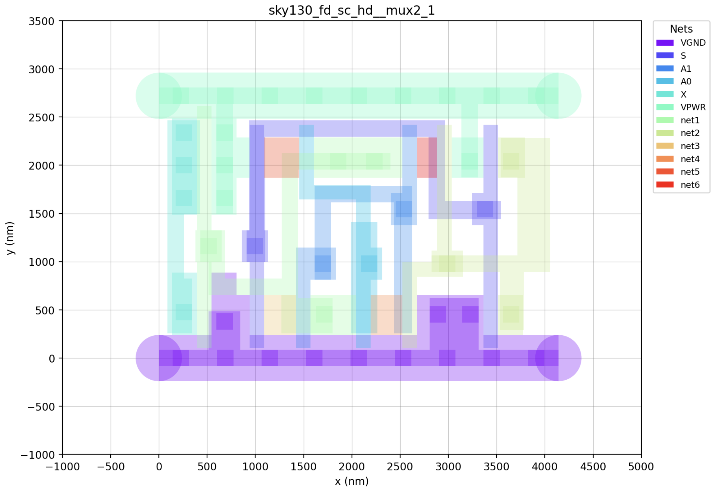
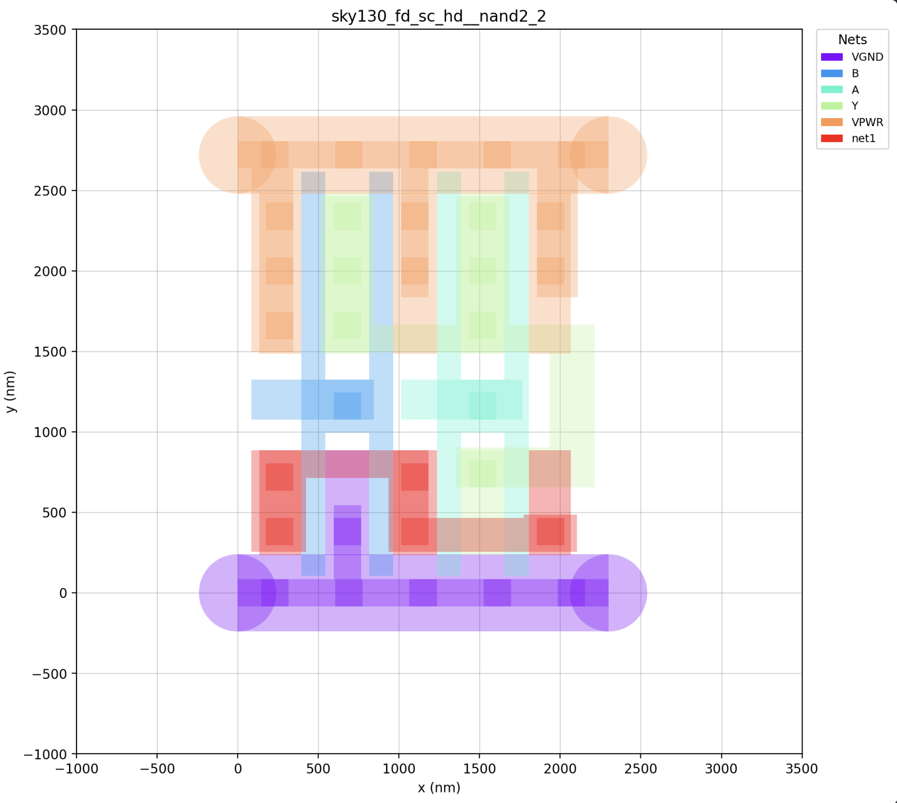
At this point, I could take each standard cell instance in puzzle, take each pin from that
cell (A, B, clk, etc.), and attach a set of polygons that belong to that pin. Since
the puzzle structure also includes polygons/paths connecting the standard cells to each other,
I could determine which cells are connected to each other.
For instance, if the first OR2's output pin X is connected to another gate's second input pin B
I could combine each pin's set of polygons into a larger net. By iteratively repeating this process,
I created a list of standard cell instances, a list of nets, and which instance/pin pairs connected
to each net.
AST from netlist extraction netlist - net1 - nand2_instance1.Y - dfxtp_instance9.Q - net2 - and3o11_instance4.Y - xor3_instance28.X - ... - <more nets>
Note: I verified the correctness of this combined netlist with two steps. First, I categorized each pin of each standard cell as an input or an output using the sky130 library. Then, I iterated through the final netlist to ensure each net had exactly one driver.
From here, I could simply trim out the VPWR/VGND pins,
remove all the non-logical pins (like decoupling capacitors,
diodes), and export this AST into a synthesizable verilog file.
I took the given example_inputs.vcd file and parsed it into a verilog testbench file that would write
the input pins high/low at each clock cycle. Then, I just attached the testbench to an instance of the puzzle
module to read the outputs.
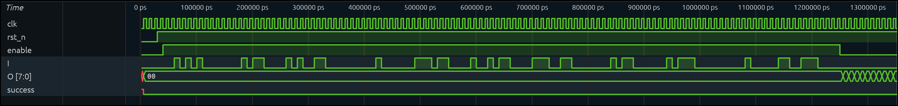
Figure 5: Waveform capture from my extracted netlist. This matches example_inputs.vcd exactly.
Summary: Again, to summarize what I figured out so far:
- I created a mapping of each logical pin to a set of corresponding polygons in each standard cell.
- I combined these nets at the puzzle-level to determine which cell pins connect to each other.
- I am confident this netlist is valid because every net has exactly one driver.
- I converted this list of instances/pins to a runnable verilog file.
- I simulated this verilog file by writing a testbench. It behaves the same as the given .vcd file.
Analyzing Netlist
Since I can clearly separate all of the sequential logic (flip flops) from the combinational logic (gates, buffers, diodes), I simply wrote an equation for each flipflop with respect to the other flipflops and the input pins.
Example Equations: ff1 = (ff9 AND ff3) OR ff4 ff2 = ff2 OR (ff1 AND NOT ff32) AND I ... ff92 = ff30 AND (ff49 OR ff20) AND RST_N
Since I know which flipflop ultimately drives the "success" pin, I need to solve for which possible values of the other 91 flipflops (and the 4 input pins!) would make this pin go high. This is a boolean satisfiability problem, which is arguably the most famous NP-complete problem.
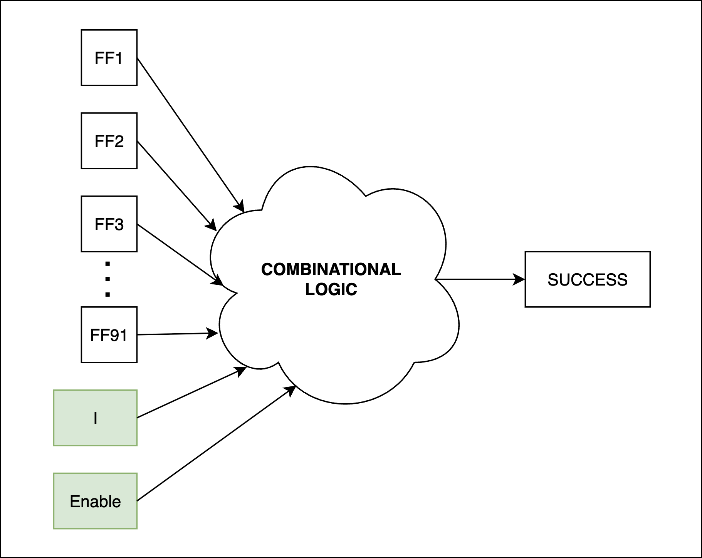
Figure 6: Block diagram of the combinational logic feeding "success".
However, the boolean satisfiability problem has no concept of time. So, I "unrolled" this circuit in time to make a variable per flipflop per clock cycle. Then, I had a python script make an equation for the output "success" with respect to the input pins (input, reset, enable) at each point in time.
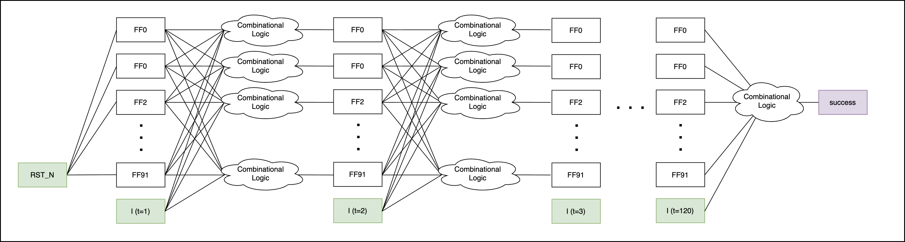
Figure 7: Block diagram of unrolled boolean circuit feeding "success".
Now, I just need to find a valid combination of I_0, I_1, …, I_N that will make
the success pin go high. By iteratively generating an expression and then testing it with
a SAT solver for progressively more clock cycles, I could prove that there is no way to make
success go high in fewer than 121 steps.
Summary: So, to summarize this section,
- I derived equations for each flipflop with respect to the other flipflops and the top-level inputs.
- I "unrolled" these equations in time to make a giant boolean expression for "success" with respect to
Iat each point in time.- I plugged this equation into a SAT solver to find satisfying values for
Iat each point in time.
Easter Eggs
Here are the miscellaneous things I noticed along the way. Noticeably, this whole puzzle had a "starry sky" theme, with several easter eggs relating to the theme. This isn't even counting the standard cell library, which is named "sky130".
Easter Egg 1 - per arenam ad astra
While I was parsing the standard cells to create the netlist, all layer/datatype combinations matched the
sky130 expectations except for two. There were two cells named INTERNAL_3 and INTERNAL_7 which each
consisted of only one polygon on layer 200. Layer 200 is not typically used by any
standard cell library, so I noticed them while parsing each standard cell.
When I rendered these placements on the graph, I got a barcode-looking structure:
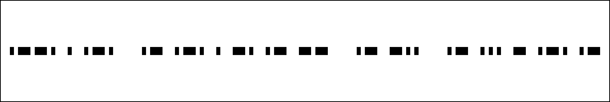
Figure 8: Rendered instances of INTERNAL_3 and INTERNAL_7 (thin/wide rects).
This is a morse code message that translates to per arenam ad astra. This seems like a parody of
the Roman phrase per aspera ad astra, which means "through hardships to the stars".
By swapping aspera with arenam (which means "sand"), the new translation is
"through sand to the stars".
Sand is made of silicon.
Easter Egg 2 - The night sky awaits
The given example_inputs.vcd file has two random-looking input patterns that are each 121 bits long. However,
when breaking this into 11 groups of 11, we can trim the leading/trailing zeroes to get the following bytes:
| Binary | ASCII |
|---|---|
| 01010100 | T |
| 01101000 | h |
| 01100101 | e |
| 00100000 | [space] |
| 01101110 | n |
| 01101001 | i |
| 01100111 | g |
| 01101000 | h |
| 01110100 | t |
| 00100000 | [space] |
| 01110011 | s |
| 01101011 | k |
| 01111001 | y |
| 00100000 | [space] |
| 01100001 | a |
| 01110111 | w |
| 01100001 | a |
| 01101001 | i |
| 01110100 | t |
| 01110011 | s |
| 00100000 | [space] |
| 00100000 | [space] |
Their given example was "The night sky awaits ".
Easter Egg 3 - Puzzle outputs
When the success pin goes high, the output prints (* TWO STARS *) in ASCII, sticking with
the "sky" theme. However, this is not the only output!
When you enter 121 zeroes (I never goes high), you get EMPTY SKY.
When you enter 121 ones (I never goes low), you get BIG BANG.
If you draw the zeroes and ones of the solution as spaces and stars, it looks like this:
_ _ _ _ _ _ _ * _ * _ * _ _ _ _ * _ _ _ _ _ _ _ _ _ _ _ _ * _ * _ * _ * _ _ _ _ _ _ _ _ _ _ _ _ * _ * _ _ _ _ _ _ * _ _ _ _ _ * _ _ _ _ _ _ * _ _ _ _ _ * _ * _ _ _ _ * _ _ _ _ _ _ _ * _ _ _ _ _ _ * _ _ _ _ _ * _ _ * _ _ _ * _ * _ _ _ _ _ _ _
Notably, every row and every column has exactly two stars.
Failed Attempt: GUI tool
Although the SAT solver works very nicely, it was NOT my first attempt. I actually spent about two weeks trying to get this GUI tool to work, but it ultimately did not get me to the puzzle solution.
I wanted to create a generic tool to reverse-engineer any ASIC, not just this specific example. As such, I wanted the reverse-engineering of the chip's functionality to work for any inputs and any function.
This would, of course, take some human input. Therefore, I wanted to create a GUI tool that could help a human to visually sort through the logic, group modules together, and build up the hierarchical structure.
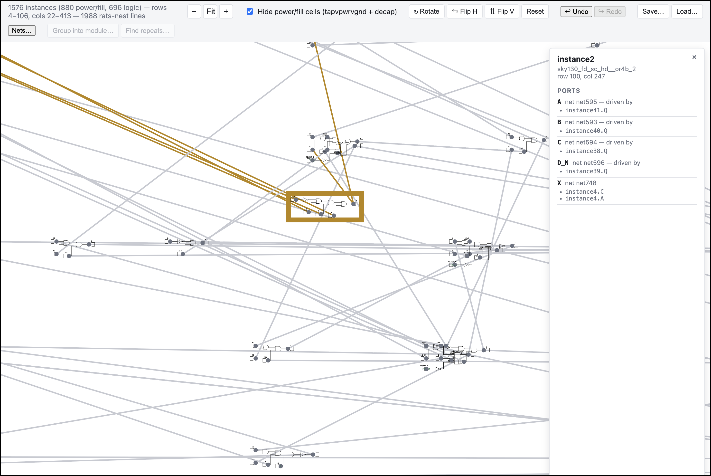
Figure 9: Screenshot from the visualizer GUI. Each cell could be highlighted/moved.
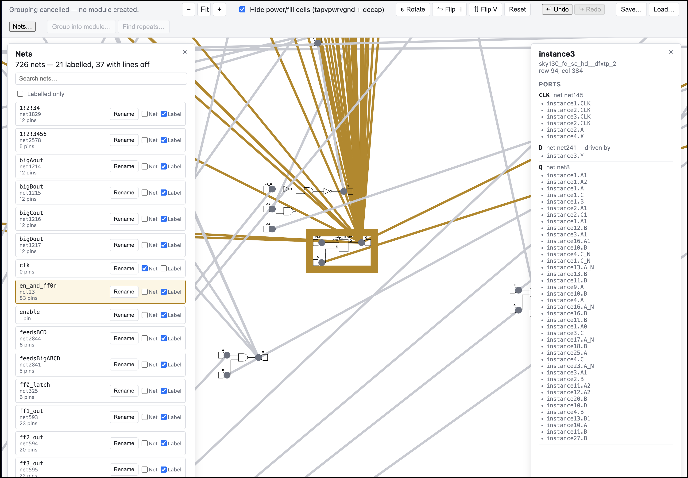
Figure 10: Screenshot of a large-fanout D-FlipFlop in the visualizer tool.
Since many pins were extremely high-fanout, I added the ability to hide the line and just label each connection with text.
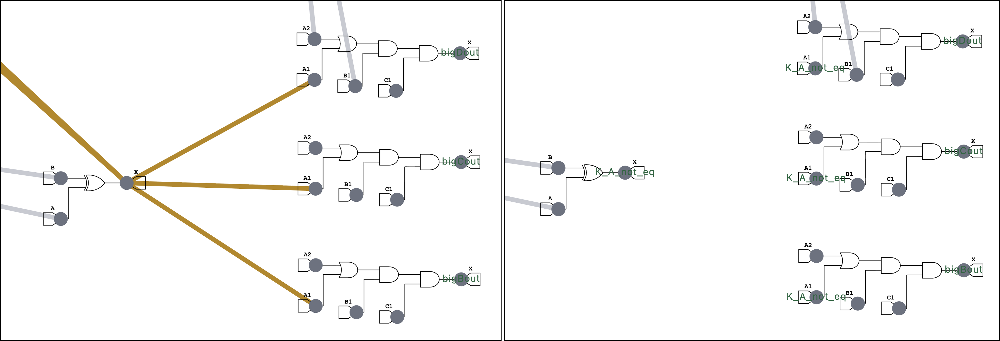
Figure 11: Before/After comparison of net-labeling feature.
Note: The above is not the most clear example of the net-labeling feature. It is most useful with fanouts of 10+.
Using this tool, I started to untangle the mess, visually see the highest-fanout (highest-impact!) flipflops, and start to organize the standard cells into logical modules.
After over twenty hours, spread out over multiple weeks, I had to bite the bullet and switch back to the SAT-solver approach.
Closing Statements
I want to give a huge thank you to the hardware team at Jane Street. I've spent almost all of my free time thinking about this puzzle, trying different approaches, and learning more about the whole ASIC development pipeline. I generally tried to minimize my AI usage by narrowly defining the scope of any task I asked it to do. My goal was (and still is!) to learn as much as possible, and I didn't want to shortcut that by outsourcing too much of my thinking.
This has genuinely been an incredibly rewarding, fun, and valuable experience.
gratias ago silici